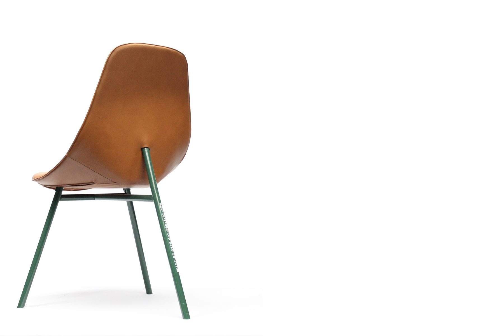
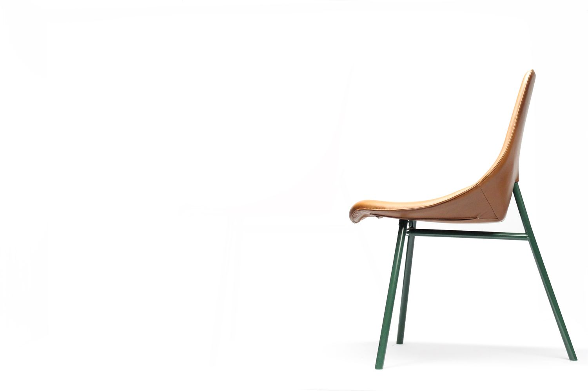
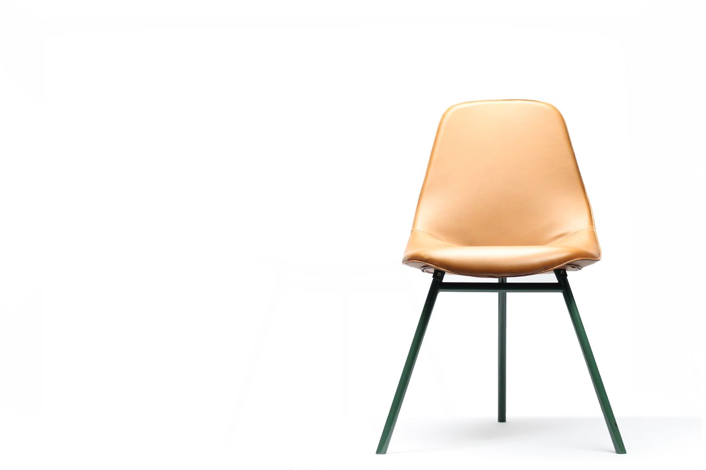

WORK 18 / 29
Kilo Low Back
A compact study in material strength and comfort.
Year2016
MaterialsSteel and leather
StageLimited edition

DESIGN STORY
Kilo Low Back explores the same material contrast as Kilo High Back in a more compact silhouette. Steel provides the structure, while leather introduces warmth and contact with the body. The reduced proportions offer another interpretation of the collection's dialogue between tension, restraint and everyday comfort.

